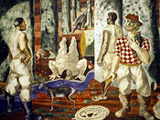
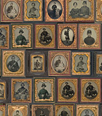

Research Centers
Main Reading Room, photograph by Carol M. Highsmith, [1980].
General Collections
Books, pamphlets, journals, newspapers and other serial publications. More about the General Collections

Mural painting, Hispanic Reading Room, photograph by Carol M. Highsmith, [1980].
International Collections
More than 470 languages are represented in the Library's global collections. More about the International Collections

Ambrotypes and tintypes from the Liljenquist Family Collection of Civil War Photographs.
Special Format Collections
Photographs, maps, music, sound, film, manuscripts, and other media. More about the Special Format Collections
Research on the Web
Featured Video Tutorial
Quick Links
- Getting Started
- Frequently Asked Questions
- Getting a Reader ID Card
- Research Guides
- Wireless Access at the Library
Research at the Library
Preparing for Your Visit
- Hours of Operation
- Maps/Floor Plans & Building Access
- Conduct on the Premises
- Information for Researchers
- Restrictions on Personal Belongings
Public Services
- Ask a Librarian
- Using the Library's Collections
- Overviews of the Collections
- Orientation Classes
- Reference Service Policy
- Hold Services & Advance Reserves
- Study Shelves
- Special Search Request
- Copying and Printing Services
- Duplication Services
- Interlibrary Loan
- Virtual Programs & Services